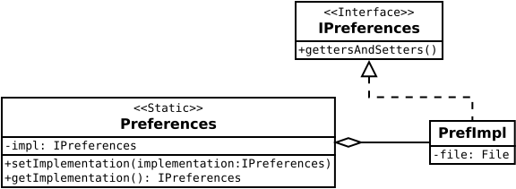

Package au.edu.anu.omhtk.preferences
package au.edu.anu.omhtk.preferences
This package enhances
Preferences to handle arrays
converted to Strings.
As implemented here PrefImpl, the backing store is ignored and the
data is saved to a specified file when flushed.
The intention is that preference data can be saved along with file specific data for an application session so the appearance of the application is stored with that particular session of which there can be any number. *

- Author:
- Ian Davies - Dec 11, 2018
-
Interface Summary
-
Class SummaryClassDescriptionThis static class is a wrapper for any implementations of
IPreferences.This implementation ofIPreferencesis a wrapper class forPreferences.